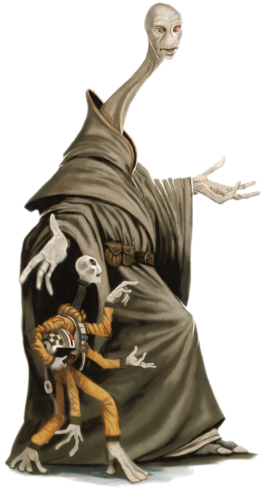

Quermian
quermian
Special Abilities: Quermians begin the game with one rank in Perception. They still may not train Perception above rank 2 during character creation.
Additional Limbs: Quermians have six limbs: two legs and four arms. As a result, they gain an additional free maneuver per turn, although they still may not perform more than two maneuvers per turn.
The Quermian species is an offshoot of the Xexto, produced through genetic tampering long ago by Arkanian scientists. Though larger than their Xexto cousins, Quermians tend to be less physically adept; they rarely make full use of their great height or the extended reach of their four arms. Most rely instead on the extensive mental processing power offered by their dual brains, which they use to read other species for their own benefit.
The Quermians are a tall, spindly species, with slender torsos surrounded by six limbs—including two pairs of arms—and extended necks nearly as lengthy as the trunks from which they rise. Their skin tends toward a pale, ashen hue and is frequently wrinkled with slight folds. Their faces have only smooth skin where the nose is found on many other species; instead, olfactory organs on their hands perform the function of detecting scents.
Like the Xexto, Quermians have two brains, one in their head and one in their chest. Unlike their cousins, who divide different functions between the two brains, Quermians each have two fully developed brains. In some Quermians, each of the two brains even develops its own separate personality. In Quermians who are controlled by a unified mind, the secondary brain operates in tandem with the first, processing input with a level of detail and insight that can seem uncanny to many other species. In particular, the dual brains of the Quermians allow them to read otherwise undetectable signals in the body language of any species. Quermians sometimes exploit this understanding to communicate silently through minute shifts in posture, allowing them to act in concert without any words being exchanged. The level of insight and communication Quermians are known to display has given them a strange reputation among other species, who sometimes suspect them of possessing further gifts, or even an innate Force sensitivity.
Quermian society is largely focused inward, with a simple, communal lifestyle allows individuals to concentrate on their own needs. By the standards of most advanced societies, the Quermians consume very little. Many members of the species spend much of their time on intangible pursuits such as philosophy or the production of art, literature, and music. The nature of Quermian intuition and communication is such that members of their society who want for basic necessities are easy to identify, and swift aid is typically rendered to these individuals. Even the most selfish Quermians can rarely stomach reading the pain of their fellows for long.
When in the company of sentients outside their species, Quermians often operate very differently. Their ability to read other species is not as sharp as their understanding of each other. However, it does offer them an edge in most social maneuvering, giving them something of a reputation as manipulators or hucksters. Certainly, some Quermians revel in their ability to so easily discern hidden motives and desires, although many simply use the talent to avoid being manipulated themselves.
The ancestors of modern Quermians were named for Quermia, the world on which the Arkanians settled them. After the ancient Arkanians moved on, the Quermians developed their own society, centered on a largely peaceful communal lifestyle and the contemplation of philosophy. The long peace of Quermian society can at least partially be attributed to the ease with which the species is able to communicate and share its feelings and concerns.
Of course, Quermia’s history is not entirely peaceful, although strife usually has came from outside influence rather than internal struggles. During the Clone Wars, Quermia was isolated from the Republic in Separatist space, and it suffered heavily under an extensive blockade. With the fall of the Separatist cause, the blockade was lifted, but Imperial rule is not usually considered a substantial improvement among the generally peaceful Quermians. Given the Empire’s propaganda campaign against the Jedi and its purges of Force users, some Quermians even fear that their frequently misunderstood talents might lead the Empire to take drastic measures against them.
The Quermian language, which goes by the same name as the species, is known mostly for its melodious sound. However, it is also a language with a great deal of specialized vocabulary, developed over the species’ long history of philosophical introspection. Although most Quermians also speak fluent Basic, they take great pride in their own language, enjoying it for its sound as well as for the ease with which it can express complex abstract concepts.
Although the Quermians do not possess a more inherent affinity for the Force than do most other species, they have long been associated with its mysteries. Many prominent Jedi have been Quermian, including Master Yarael Poof, who sat on the Jedi High Council until his death, shortly before the Clone Wars. Furthermore, their natural insight has led many outsiders to assume that all Quermians are Force-sensitive. In the current state of the galaxy under Emperor Palpatine, this assumption causes many problems for Quermians abroad across the galaxy, who risk being turned in or hunted as Force users, even if they are not.
Few species in the galaxy are as thoroughly misunderstood as the Quermians, who find that a quirk of their dual-brained biology leads the ignorant to assume that many or even all of them are Force-sensitive. The educated widely ridiculed this assumption during the days of the Republic, when the Jedi were widely known. In current times, however, Imperial misinformation campaigns have taken what was already a difficult reputation to live with and made it nearly unbearable.
When interacting with other species, Quermians are now faced with an unenviable choice. They can make use of their natural talents, intuiting the crux of any conversation and resolving their business easily, or they can try to ignore their insights and behave as if they do not know as much as they truly do. Some Quermians who choose the latter path compare it to walking around a corner with their eyes shut, as their natural insight occurs on a level as basic to them as vision or any other sense. These Quermians who ignore their insights still have mixed success avoiding the stigma that has come to surround the species, as they are often perceived as distracted, inattentive, or even shifty. Quermians who manage to convince business partners or traveling companions of their normality are matched in number by those who find themselves pegged as conniving or eerie even as they try to avoid demonstrating any off-putting talents.
Perhaps the only benefit in all of this is that truly Force-sensitive Quermians are harder to discern from their peers if they do not use overt Force powers. On worlds where the Imperial authorities have grown sick of responding to false alarms, careful Force-sensitives might be able to pass off their talents as just more inherent oddities of the species.
Quermians have an innate understanding of body language, even extending to other species. Members of this species can communicate basic concepts (no more complicated than “this place is dangerous” or “that being is untrustworthy”) to each other nonverbally using subtle cues from body language. Depending on the situation, Game Masters can also add to checks Quermians make to determine the intent of a living being whose form they can clearly observe.